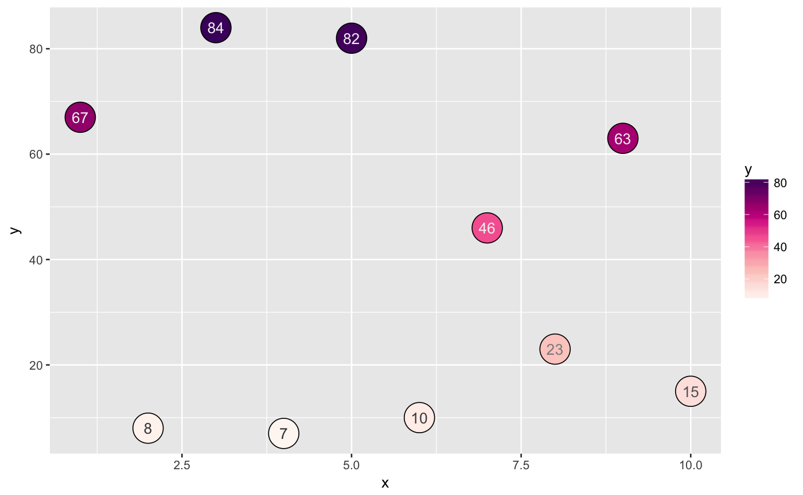
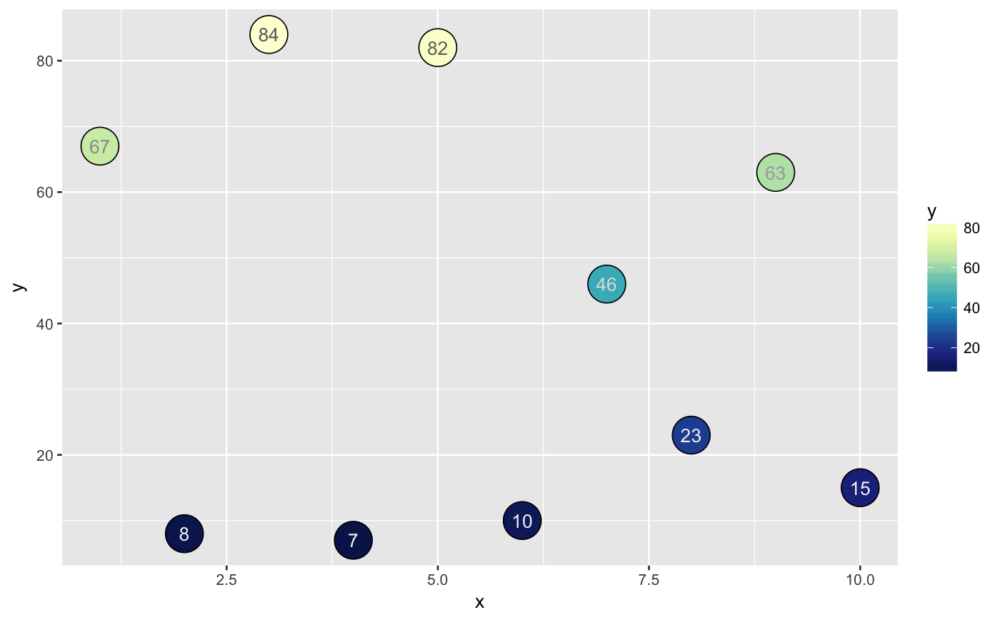

Find a corresponding grey color to overlay on top of a colored object within ggplot. Should be used in conjuction with ggplot2 objects; geom_text object should specify colour/color aes argument By default, color values are linearly interpolated from the low value of the range to 50 data larger than that are all given the same color (`light_color`)
scale_colour_text(data_col, light_colour = "#f1f2f2", dark_colour = "#414042", darkOnLowVals = TRUE, diverging = FALSE, mapping_range = NA)
| data_col | data containing the data frame to map the colors to |
|---|---|
| darkOnLowVals | binary whether to have the dark_color text on low values of data_col |
| diverging | binary values to scale the palette by the absolute value of the values. For use with an underlying diverging color palette |
| mapping_range | (optional) manually specify the breakpoint for the linear interpolation of color |
| light_color, light_colour | hexadecimal or R color name for the text on top of dark objects (usually a light color) |
| dark_color, dark_colour | hexadecimal or R color name for the text on top of light objects (usually a dark color) |
## create random data df = data.frame(x = 1:10, y = sample(0:100, 10)) ## Plot value library(ggplot2) ggplot(df, aes(x = x, y = y, fill = y)) + geom_point(size = 10, shape = 21) + geom_text(aes(label = y, colour = y)) + scale_colour_text(df$y) + scale_fill_gradientn(colours = RColorBrewer::brewer.pal(9, 'RdPu'))## When using reverse scale for color (dark not on low values), mapping_range should go from the midpoint to the endpoint ggplot(df, aes(x = x, y = y, fill = y)) + geom_point(size = 10, shape = 21) + geom_text(aes(label = y, colour = y)) + scale_colour_text(df$y, darkOnLowVals = FALSE, mapping_range = c(40,100)) + scale_fill_gradientn(colours = rev(RColorBrewer::brewer.pal(9, 'YlGnBu')))#> Warning: the condition has length > 1 and only the first element will be used